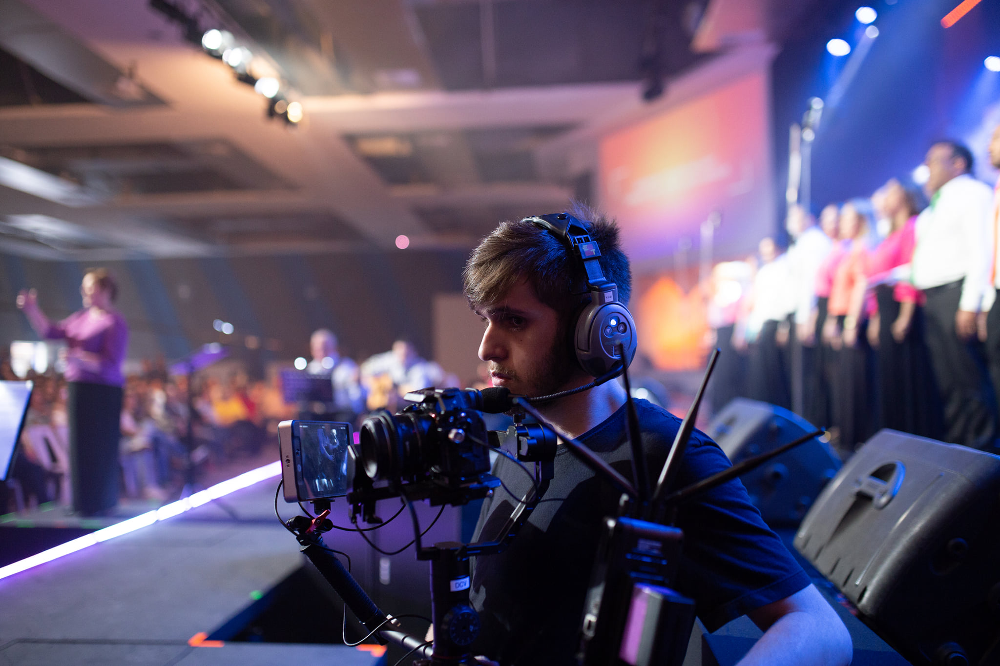
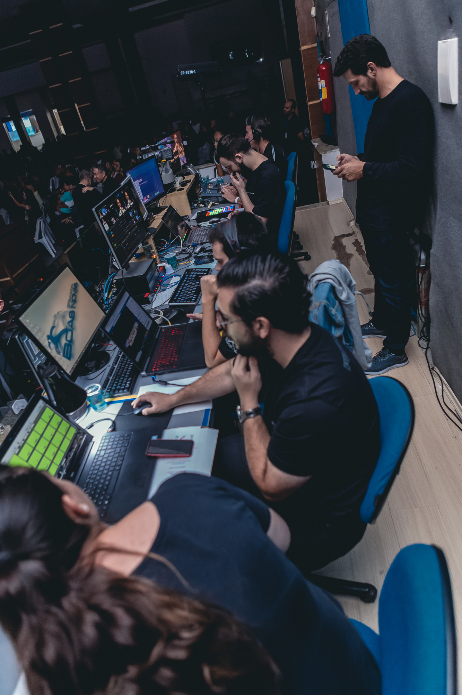

O nosso grupo de multimídia está dividido em 4 equipes principais, são elas: áudio, broadcast, projeção e transmissão. Conheça as atividades e as responsabilidades de cada time para que todas os aspectos relacionados a multmídia funcionem durante os cultos. Qual equipe você gostaria de conhecer? Clique abaixo para saber mais:
A equipe de áudio é responsável por garantir que o público espectador seja impacto pela mensagem passada através do áudio que necessita ser precisamente regulado em cada microfone, instrumento e nas caixas de som. Este time está a frente da operação das mesas de som que controlam o áudio tanto em eventos presenciais, como em transmissões online. A importância do time de áudio é indiscutível, sendo extremamente importante para que os eventos realizados na igreja sejam feitos com excelência.

A equipe de broadcast é responsável por operar todas as câmeras que fornecem os vídeos para as transmissões onlines além dos telões da igreja. Durante os cultos, esta equipe conta com 5 pessoas, sendo 4 operando câmeras e 1 como diretor de imagens. O Broadcast necessita de atenção e excelência no trabalho para que as imagens do culto, alinhadas a todas as outras áreas da Multimídia possam impactar a vida de muitas pessoas.
A equipe de projeção tem a função de garantir que os slides utilizados nos eventos, contendo apresentações de Powerpoint, letras de músicas e de avisos sejam passados a toda a igreja durante os cultos. Além disso, auxiliam na organização dos eventos, cronometrando cada parte do culto para que tudo ocorra dentro do tempo previsto.
A equipe de transmissão é responsável por garantir que os cultos sejam transmitidos de forma ao vivo em diversas platafromas de streaming como o Youtube, Facebook, Instagram e no aplicativo da igreja. Além disso, o time de transmissão controla o que está sendo enviado para os telões da igreja e para as transmissões, selecionando se o que está aparecendo nas telas são videos, imagens das câmeras, slides e etc.